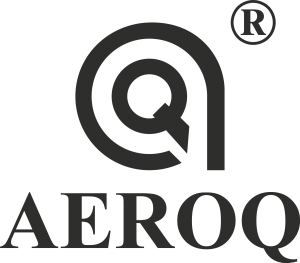

Suntem Acreditați

Cum iși rezolvă cliențiin noștrii problemele de intreținere cu aceste 2 soluții?
Ești unul dintre cei care au nevoie de o soluție personalizată? Sau nu găsești o modalitate de a elabora singur soluțiile? Avem un cadou pentru amândoi, citiți mai departe.
Poate că nu ți-a plăcut chimia când erai copil, dar aici vei găsi o lume de resurse pentru a o invăța sau pentru a o uita cu totul:
Dorești să afli cum companii precum Hammerer, Henke, Transavia, Mondelez, și mulți alții și-au rezolvat problemele asemănătoare cu ale tale?
Nu ne vindem produsele online, deoarece fiecare dintre ele a fost creat pentru o nevoie specifică și ar trebui să ințelegem cazul tău particular pentru a-ți recomanda o soluție adaptată nevoilor tale.
Cu toate acestea, dacă dorești să arunci o privire asupra catalogului nostru, il poți descărca de aici.
Dacă ai o companie sau lucrezi intr-una, este posibil ca acest lucru să te intereseze.
Noi am dorit să ajutăm cât mai multe companii prin sintetizarea celor mai practice și relevante lucruri din acești ani de istorie a Wartung intr-un manual practic de mentenanță industrială.
Acest manualc reunește studiile de caz ale celor mai relevante consultanțe de mentenanță pe care le-am făcut in ultimii 13 ani pentru clienti din România și pentru unii clienți din UE.
Dacă dorești să primești gratuit acest manual il poți descărca apăsând butonul de mai jos.
Iar acum, dacă iți plăcea chimia când erai copil.
Pentru utilizatorii inscriși in newsletter, prin oricare dintre formularele de pe site, trimitem in fiecare lună o formulă pentru a realiza un produs profesional. Totul este explicat in limba română, intr-un videoclip care demonstrează cum se face produsul.
Se arată rezultatul final și rezultatul obținut in urma aplicării produsului.
Absolut totul, totul de la A la Z.
Mai mult, dacă nu știi de unde să incepi cu materiile prime, nu-ți face griji, te ajutăm să faci rost de toate materiile prime, dându-ți chiar și numele câtorva furnizori de unde le poți cumpăra in zona ta.
Dacă te interesează acest lucru, il poți găsi aici: